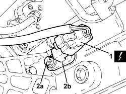

2127E52 HYDRAULIC SELECTION GEARBOX INPUT SHAFT SPEED SENSOR - R.R.
- Path
- Procedures > 21 GEARBOX UNIT > 2127 ELECTRO-HYDRAULIC SELECTION GEARBOX EXTERNAL CONTROLS > 2127E GEAR CONTROL SELECTION ELECTRIC SYSTEM > 2127E52 HYDRAULIC SELECTION GEARBOX INPUT SHAFT SPEED SENSOR - R.R.
- Kind
- repair procedure (removal / refitting; the operation number is the code)
- Applies to
- engines: 2.2 JTS; all production periods
- Interactive page
- https://sloeber94.github.io/elrnDB-aBrrSpdr/en/#/946004320
Applies to: engines: 2.2 JTS; all production periods
 Removing
Removing
 Refitting
Refitting- Place the gear lever in N.
Op. 7055B54 UNDER ENGINE PROTECTION/GUARD - R.R.
1. Discconnect the electrical connection for the gearbox input shaft speed sensor.
Description | Connector | |
|---|---|---|
1 | Gearbox input speed sensor |
2. Undo the bolt (2a) and remove the gearbox input shaft speed sensor (2b) complete with O-ring.

Applies to: engines: 2.2 JTS; all production periods
Refitting
Removing- Place the gearbox input shaft speed sensor back in its housing complete with new O-ring and secure it using the bolt.
- Connect the electrical connection for the gearbox input shaft speed sensor.